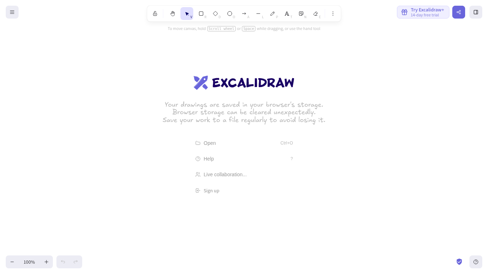
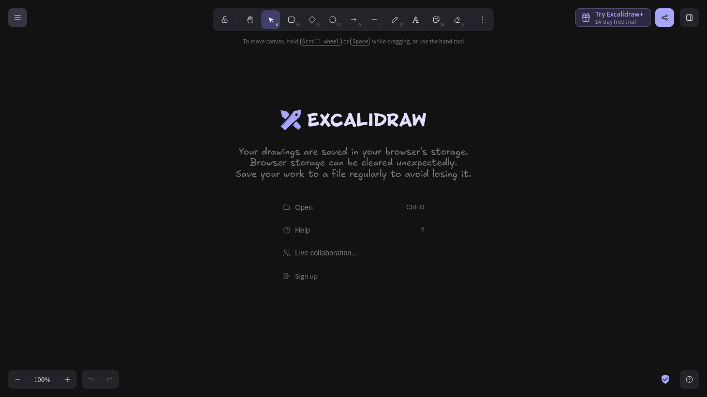
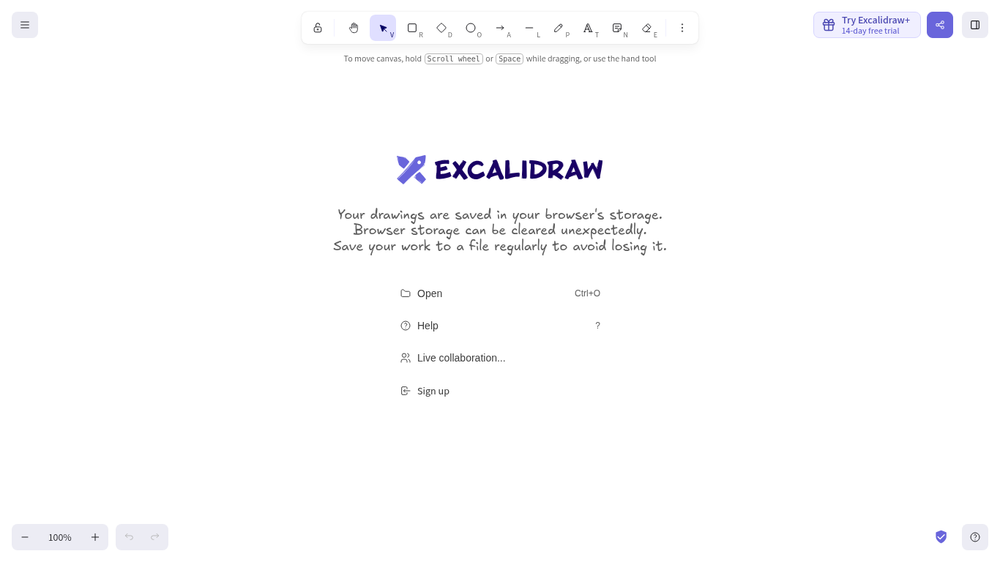

Oportunidades de melhoria e ação executada¶
Esta página lista as oportunidades de melhoria das métricas com nota 0, prioriza essas oportunidades, explica qual foi executada e mostra o efeito medido.
Oportunidades de melhoria¶
Toda métrica com nota 0 vira oportunidade, mesmo quando a média da questão é maior (seção 3 do roteiro):
| Métrica / evidência | Problema | Impacto | Recomendação |
|---|---|---|---|
| S-M1 | 1 de 6 tipos de evento da colaboração vai sem cifra (o nome no pedido de seguir) | Exposição do nome ao operador do servidor de sala; não demonstra leitura por terceiros sob HTTPS/WSS. | Enviar o pedido de seguir pelo canal cifrado ou mandar só o socketId |
| S-M3 | Link de colaboração sem senha, expiração nem revogação | Quem possui o link e a chave pode entrar; dificulta limitar duração e retirar acesso. | Oferecer senha separada do link, expiração e revogação validadas pelo servidor |
| S-M4 | Cena, arquivos e biblioteca ficam sem cifra no navegador | Conteúdo permanece legível a quem acesse o armazenamento do navegador; não prova acesso remoto indevido. | Avisar do salvamento local e permitir limpar ou não persistir; cifrar com chave do usuário num modo protegido |
| S-M7 | Nenhuma das 7 ações tem autor registrado | Impede atribuir as sete ações observadas a um autor verificável. | Registrar ação, participante, horário e operação numa trilha persistente |
| S-M8 | Não há histórico de versões, só desfazer e refazer | Dificulta investigar e restaurar alterações com autoria; comparação paga não concluída. | Guardar versões com data, autor e opção de restaurar |
| S-M10 | Um participante assumiu o nome de outro sem bloqueio | Nomes iguais confundem a atribuição das ações; a identidade não é verificada. | Oferecer identidade autenticada; sem login, distinguir nomes repetidos por identificador visível, sem apresentá-lo como autenticação |
| S-M11 | 5 vulnerabilidades altas nas dependências | Risco potencial nas versões instaladas; exploração e presença no bundle não demonstradas. | Atualizar nanoid e socket.io-parser e repetir a auditoria |
| S-M12 | Advisory aplicável sem correção publicada | Permanece risco potencial na importação descrita no aviso, sujeito à revisão da análise estática. | Acompanhar a correção e verificar de novo a importação de cenas |
| F-M7 | Só 24 de 42 funções do draw.io | Usuários vindos do draw.io perdem funções avançadas; impacto sobre produtividade ainda não medido. | Priorizar tabelas, swimlanes e importação de arquivos .drawio |
| CI-M5 | Só 5 de 8 tarefas de iniciantes concluídas sem ajuda (62,5%) | Na T5, iniciantes passaram do tempo, não concluíram ou perguntaram à facilitadora, e ninguém recorreu à ajuda da ferramenta. | Mostrar o nome da forma ao passar o mouse e no primeiro uso, e destacar a ajuda na tela de boas-vindas |
| CI-M14 | Tema e zoom não entram no desfazer | Desfazer não restaura tema/zoom e pode atingir edição anterior. | Deixar claro o que o histórico cobre e manter controles para restaurar tema e zoom |
| CI-M17 | 23,3% das ações dos iniciantes e do perfil C foram erradas | Retrabalho nas primeiras tarefas, concentrado em quem nunca usou a ferramenta (47,1% em P03); contagem de uma pessoa. | Analisar nas gravações os tipos de erro mais comuns e reforçar o retorno visual de seleção e de ferramenta ativa |
| CI-M18 | Só 8 de 18 mensagens de erro explicam o problema e a saída | Orientação documental insuficiente para recuperar falhas; compreensão real não foi medida. | Incluir o motivo provável e uma ação (por exemplo, "Use PNG, JPEG ou SVG") |
| CI-M22 | 6 violações da WCAG 2.2 (A e AA) | Barreiras de zoom, nome e semântica dificultam navegação e uso assistivo nos estados testados. | Permitir zoom no viewport, nomear o botão do menu e corrigir papéis e rótulos ARIA |
| CI-M24 | O leitor de tela anuncia 1 de 9 elementos desenhados | A maior parte do desenho fica indisponível ao NVDA/Edge testado. | Expor os elementos numa estrutura acessível e anunciar seleção e mudanças |
| CI-M25 | 11 de 19 combinações de texto abaixo de 4,5:1 | Textos de apoio e atalhos podem ficar difíceis de ler, especialmente para baixa visão. | Escurecer os cinzas usados em texto até 4,5:1 e não usar opacity nos atalhos |
São 16 oportunidades, uma por métrica com nota 0 (8 de Segurança, 1 de Flexibilidade e 7 de Capacidade de interação). As páginas vinculadas na primeira coluna contêm o registro original, procedimento e evidência reproduzível. A CI-M8, não medida, não entra nesta lista. Os achados adicionais com notas 1 ou 2 permanecem em Achados, sem alterar essa contagem. A prioridade inicial de Segurança é recomendação de triagem; as barreiras assistivas também restringem o uso, sem uma pontuação de prioridade inventada.
Priorização¶
Cada oportunidade foi classificada pelo impacto no propósito da avaliação, pelo esforço da correção e pela possibilidade de medir o resultado com o mesmo método da coleta.
| Prioridade | Métricas (nota 0) | Impacto | Esforço | Dá para medir o efeito agora? |
|---|---|---|---|---|
| 1 | CI-M25 contraste e CI-M22 violações da WCAG | Alto: O6 é o pior objetivo de Capacidade de interação (31,3%) e bloqueia a decisão de uso pedagógico; os textos apagados são justamente os que orientam quem está começando | Baixo: cores do tema e atributos de HTML | Sim, com o mesmo script da coleta |
| 2 | CI-M18 mensagens de erro | Médio | Médio: reescrever 10 mensagens | Só com usuários (compreensão) |
| 3 | CI-M24 leitor de tela | Alto | Alto: estrutura acessível paralela ao canvas | Sim, mas exige o desenvolvimento antes |
| 4 | S-M1, S-M3, S-M4, S-M7, S-M8, S-M10 | Alto para diagramas sensíveis | Alto: mudam o servidor de colaboração, autenticação e armazenamento | Não no prazo |
| 5 | S-M11, S-M12 dependências | Médio | Médio: atualizar pacotes e testar regressões; um aviso não tem correção publicada | Sim, com nova auditoria |
| 6 | F-M7, CI-M14, CI-M5, CI-M17 | Médio | Alto (novas funções) ou exigem novas sessões com participantes | Não no prazo |
A prioridade 1 foi escolhida porque junta o maior efeito sobre o objetivo mais fraco ao menor esforço, e porque o resultado pode ser medido de novo, com o mesmo script e no mesmo ambiente, para comparar antes e depois.
Ação executada: contraste e acessibilidade da interface¶
Tipo: modificação de código no Excalidraw, a partir do commit e7b5346,
na branch
melhoria/acessibilidade-38.
A main mantém aplicacao/ como foi avaliado, para que as coletas possam ser
refeitas sobre a mesma versão.
O que mudou (registro completo e diff na evidência):
- Contraste (CI-M25). Os textos de apoio, as letras de atalho, a dica de
navegação, os atalhos do menu e o botão do Excalidraw+ passaram a usar tons
do próprio tema com pelo menos 4,5:1:
#5c5c5csobre branco no modo claro (6,7:1) e#999999sobre o fundo escuro (5,5:1 a 6,6:1). Os atalhos do menu deixaram de ser apagados comopacity: 0.5. - Zoom do navegador (CI-M22, V1). O
<meta name="viewport">deixou de bloquear o zoom (maximum-scale=1euser-scalable=no). - Nomes acessíveis (CI-M22, V2, V5 e V6). O botão do menu ganhou nome ("Menu"), e o botão de zoom e os links do Discord e do X passaram a ter um nome que contém o texto visível.
Como foi medido. O build de produção foi gerado antes e depois das
mudanças, e o mesmo script da coleta original
(scripts/ci_m22_m25_acessibilidade.cjs, com axe-core e Lighthouse) foi rodado
nos dois, no mesmo computador e no mesmo dia. O "antes" reproduziu exatamente
as 19 combinações e as 6 violações registradas em 13/11.
Resultado¶
| Métrica | Antes | Depois | Nota antes | Nota depois |
|---|---|---|---|---|
| CI-M25 · contraste ≥ 4,5:1 | 8 de 19 combinações (42,1%) | 16 de 16 (100%) | 0 | 2 |
| CI-M22 · violações A e AA | 6 | 2 | 0 | 1 |
| Lighthouse, acessibilidade | 87/100 | 100/100 | — | — |
Com essas duas notas, a CI-Q9 passaria de 0,25 para 1,00 e o O6 de 31,3% para 50,0% (parcialmente atendido). A CI-M24 (leitor de tela) continua com nota 0, e por isso o uso com leitor de tela segue não recomendado.
| Modo claro | Modo escuro | |
|---|---|---|
| Antes |  |
 |
| Depois |  |
Telas iniciais nos modos claro e escuro, antes e depois da correção. Fonte:
script ci_m22_m25_acessibilidade.cjs, 22/11/2026.
Limitações¶
- As notas oficiais da avaliação continuam as do commit
e7b5346. O "depois" mede uma cópia modificada, não uma versão publicada do Excalidraw. - O recorte é o mesmo da coleta: tela inicial, seleção e menu, nos dois modos.
- Duas violações continuam: o gatilho do seletor de fonte (V3) e o papel do menu principal (V4), que exigem mudar a estrutura dos componentes.
- O zoom liberado não foi testado em aparelho real, e a mudança visual não foi avaliada com usuários.
- A correção ainda não foi proposta ao projeto Excalidraw. Ela pode ser enviada como contribuição, com o diff da evidência.